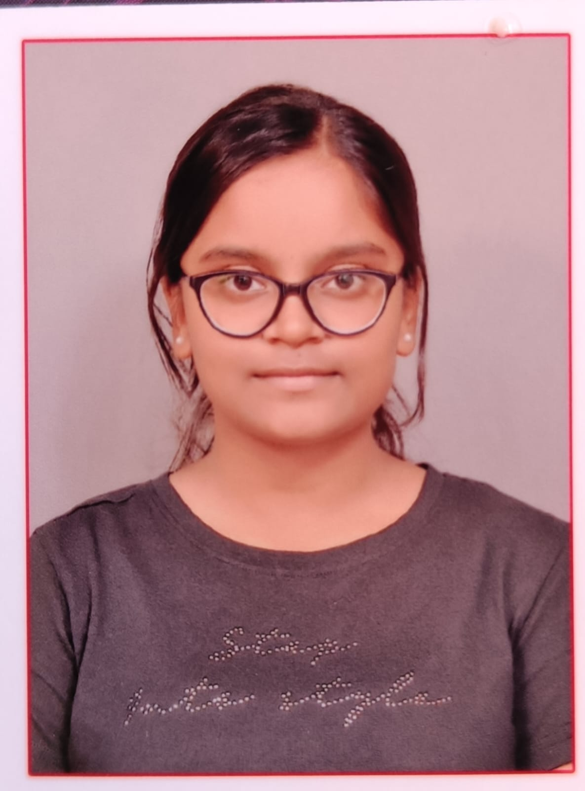

BE — Computer Science & Engineering
B.E. (CSE) · Currently Pursuing
CGPA: 8.29↗ Click to view details

3rd-year Computer Science & Engineering student passionate about problem solving, algorithms, and building practical software. Exploring everything from DSA to hardware.
Hi, I'm Komala P — a 3rd-year Computer Science and Engineering student with a genuine passion for problem solving, algorithm design, and building practical software. I enjoy breaking down complex problems, exploring new technologies, and working on projects that have real-world purpose.
My interests span Data Structures and Algorithms, software development, and web development. I'm also curious about hardware and embedded systems — the Arduino rover I built is a good example of that. I believe in learning by doing, and I'm always looking for my next challenge.
BE — Computer Science & Engineering
B.E. (CSE) · Currently Pursuing
CGPA: 8.29↗ Click to view details
11th & 12th Standard — PUC
Vidyaniketan PU College, Tumkur
91%↗ Click to view details
10th Standard — CBSE
Kendriya Vidyalaya (KV), Tumkur
88%↗ Click to view details
A safety-focused website concept designed to support personal safety — featuring an emergency SOS interface, emergency contacts, and safety resources.
↗ Click for full details
A hardware project using Arduino that autonomously detects obstacles and changes direction — my first exploration into embedded systems and robotics.
↗ Click for full details
An AI-powered civic complaint reporting and tracking platform concept — allowing citizens to report and follow up on local issues efficiently.
↗ Click for full details
A concept for a finance and productivity app that combines personal finance tracking with habit and focus tools.
↗ Click for full details
Certifications and achievements will be listed here as they are earned. Check back as learning continues!
Interested in collaborating, have a question, or just want to say hi? Here's how to reach me.